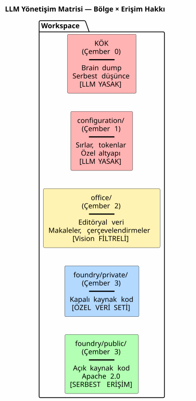
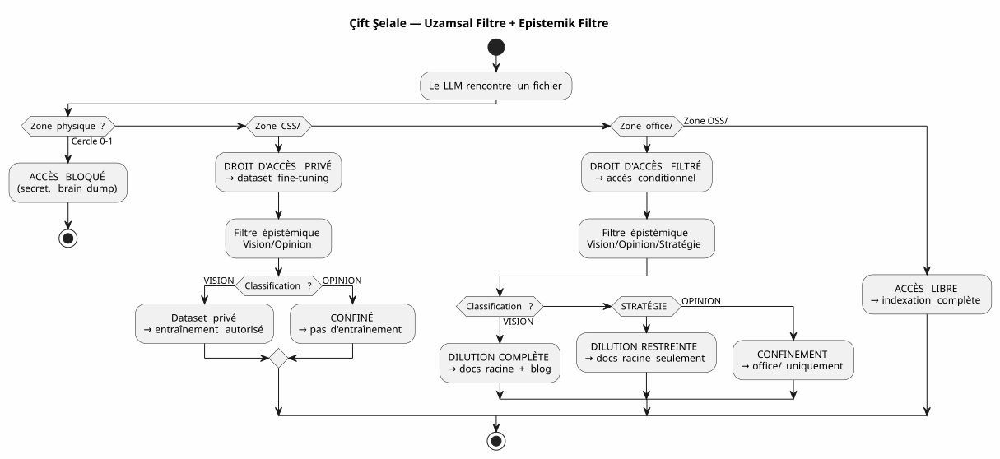
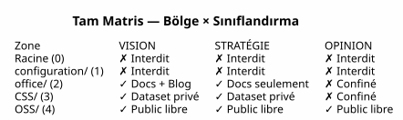

LLM Yönetişim Matrisi — Yapay Zekanızın Güvenliği Neden Ağaç Yapısıyla Başlar
Yayınlandı: 04 May 2026
- Sorun: Prompt Engineering bir Kumdan Kale
- Yanıtım: 4×4 Matris
- LLM Bu Matrisi Nasıl Tüketir
- Uygulama: Tiplendirilmiş Gradle Görevleri
- Neden Bu Bir Manifestodur, Sadece bir Spec Değil
- Tam Şelale — Brain Dump’tan Blog Yazısına
- Artılar/Eksiler
- Sonuç: Promptlarınızı Değil, Dosyalarınızı Düzenleyin
- Referanslar
Aylarca, ajan yönetişim kurallarını üst üste yığdım. Dosyalar EAGER, LAZY kontrol listeleri, altı adımlı oturum sonlandırma protokolleri. Yine de bir soru cevapsız kalmıştı: LLM, neyi… bir dosya ile ne yapma hakkına sahip?*
Cevap bir prompt içerisinde değil. Dosya sistemindedir.
Yanıtı kullanılabilir kılan mimari spesifikasyonu şöyledir — la LLM yönetişim matrisiLütfen çevirilecek metni sağlayın.
Sorun: Prompt Engineering bir Kumdan Kale
Bir LLM’e bir dosya verildiğinde, ona her şey verilir. İçerik, evet — ancak aynı zamanda koruma önlemlerinin eksikliği. LLM, bu dosyanın şunları içerip içermediğini bilmiyor bir sır, spekülatif bir görüş veya kapalı kaynaklı (closed source) bir kod. Onu indeksleyecek, özetlemek, alıntılamak, diğer verilerle karıştırmak — ve potansiyel olarak onu genel bir embedding’de veya kullanıcı yanıtında yayınlamak.
Klasik çözüm şudur: prompt:
"Tu es un assistant sécurisé. Ne divulgue jamais d'informations confidentielles.
Si tu détectes un secret, ignore-le. Si tu détectes une opinion, ne la répète pas."Bu istemin üç problemi var:
-
LLM’nin iyi niyetine dayanmaktadır. Şunun için yeterince büyük bir model:
karmaşık hataları çözmek, bir talimatı atlatmak için oldukça büyüktür 200k tokenlik bağlam içinde boğulmuş güvenlik…
-
Yapısal değil, bağlamsaldır. Promptu değiştirin, LLM’yi değiştirin,
oturumu değiştirin — ve kural kaybolur.
-
Ölçeklenmiyor. Her yeni dosya türü, her yeni seviye
gizlilik politikası yeni bir madde gerektiriyor. Promptunuz bir kimsenin tamamını okumadığı düzenleyici metin.
|
Bir sistemin güvenliği asla şu talimata bağlı olmamalıdır: unutabilir, atlayabilir veya yüklemeyebilir. Şunlara bağlı olmalıdır: açıkça istemeden geçilemeyen bir bariyer. |
Yanıtım: 4×4 Matris
Workspace’imde uyguladığım çözüm bir bölge × matrisidir LLM erişim hakkı**. LLM’den dikkatli olmasını istemez. Şöyle hale getirir yapısal olarak imkansız olan tedbirsizlik.

Beş Bölge (Mekansal Boyut — GDPR)
Workspace’ün her bölgesinin, dosyanın nereye gidebileceğini belirleyen bir GDPR seviyesi vardır yönlendirilmiş olmak:
Bölge |
GDPR Seviyesi |
İçerik |
Kamu RAG erişim hakkı |
Kök |
0 — Samimi |
Beyin fırtınaları, LLM konuşmaları |
YASAK— hiçbir zaman indekslenmedi |
|
1 — Sahibi kısıtlı |
Sırlar, token’lar, API anahtarları |
YASAK— asla indekslenmedi |
|
2 — İş birliğine dayalı kısıtlı |
Editoryal veri, çerçeveleme, eğitimler |
FİLTRELENDİ— Yalnızca Görüş |
|
3 — Koşullu Açık |
Kapalı kaynak kodlu, halka açık olmayan SaaS |
YASAK— yalnızca özel veri seti |
|
4 — Yerel genel |
Apache 2.0 kodu, yayınlanan eklentiler |
ÜCRETSİZ— tam indeksleme |
Kural basit: dosya yolu, LLM’in onunla neler yapabileceğini belirler. Korunacak meta veri yok, frontmatter’a eklenecek etiket yok, her commit’te manuel sınıflandırmaya gerek yok. Dosya şurada:`OSS/? Herkese açıktır. Şunların içindedir`configuration/? O dokunulmazdır.
Epistemik Sınıflandırma (İkinci Boyut)
Uzamsal boyut nereye yönlendirileceğini söyler. Ancak dik bir ikinci eksen daha vardır: hangi yönlendirici. İzin verilen bir bölgedeki bazı dosyalar bilgiler içeriyor olduğu gibi seyreltilmemesi gerekenler:

Epistemik sınıflandırma ızgarası, yönetişimimin Règle 2bis kısmına kazınmış olan ajan :
| Durum | Tanım | LLM Sinyali | Hedef | | VİZYON | Stabilize edilmiş mimari, test edilmiş desen | Deklaratif dil, oturum/test referansları | Tam seyreltme + Blog | | STRATEJİ | İş konumlandırma, fiyatlandırma | Pazar sözlüğü, rekabet | Yalnızca kök belgeler | | GÖRÜŞ | Spekülasyon, doğrulanmamış hipotez | Hipotetik dil, sezgi | Çember 0 Sınırlaması |
İki boyutun kombinasyonu — fiziksel alan × epistemik sınıflandırma — şekillendirirtam matrisLütfen çevrilecek metni sağlayın.

LLM Bu Matrisi Nasıl Tüketir
Matris, LLM’nin okuduğu bir belge değildir. Bu bir kısıtlamadır örtük bileşik bağlam vektöründe kodlanmış (EPIC 9 — devam ediyor uygulama).
LLM’in her oturumda aldığı şunlardır:
VECTEUR COMPOSITE DE CONTEXTE
├── RAG pgvector → OSS/ + office/Vision
│ (similarité sémantique sur contenu publiable)
├── Knowledge Graph graphify → OSS/
│ (relations exactes entre artéfacts publics)
├── Knowledge Graph privé → CSS/
│ (relations entre code closed source — jamais exporté)
├── Métadonnées de zone → chaque fichier taggé par zone physique
│ (le LLM sait s'il est dans office/ ou OSS/)
└── Historique des décisions → WORKSPACE_VISION.adoc
(contexte temporel des arbitrages)Somut olarak, LLM bana şöyle dediğinde:
Je vais indexer le contenu de edster/ pour enrichir le knowledge graph...Alan meta verisi, LLM henüz cümlesini bitirmeden yanıt verir: edster/`içindedir`CSS/, seviye 3 →kamu bilgi grafiğine (knowledge graph) erişim yasaktır. RAG onu görmüyor. Grafik ona dokunmuyor. Kullanıcı yanıtı onu alıntılamayın.
|
Mekansal ontoloji, bir … şeklinde çalışırUnix izinleriLLM’ler için. Bir işlemden dikkatli olmasını istemezsiniz`/etc/shadow`— okuma erişimini reddedersiniz. Aynı prensip. |
Uygulama: Tiplendirilmiş Gradle Görevleri
Matris bir felsefe değildir. Bir koddur. İşte görev sözleşmesi Onu uygulayan Gradle:
abstract class ZoneAwareIndexer @Inject constructor(
private val rootDir: DirectoryProperty,
private val configServer: ConfigServerProperty // → configuration/
) : DefaultTask() {
@Input
val zoneFilter: SetProperty<Zone> = project.objects.setProperty(Zone::class.java)
@OutputFile
val ragIndex: RegularFileProperty = project.objects.fileProperty()
@TaskAction
fun index() {
val allowedPaths = zoneFilter.get().flatMap { it.resolve(rootDir.get()) }
val forbiddenPaths = Zone.RESTRICTED.resolve(rootDir.get())
+ Zone.INTIMATE.resolve(rootDir.get())
// Le RAG ne voit jamais configuration/ ni la racine
// CSS/ alimente un index privé, pas celui-ci
// office/ est filtré par le classifieur Vision/Opinion
}
}
enum class Zone {
INTIMATE, // Cercle 0 — racine
RESTRICTED, // Cercle 1 — configuration/
EDITORIAL, // Cercle 2 — office/
CLOSED_SOURCE, // Cercle 3 — foundry/private/
OPEN_SOURCE // Cercle 3 — foundry/public/
}Görev test edilebilir. Şunları doğrulayan bir test yazabilirsiniz:
@Test
fun `le RAG n'indexe jamais configuration`() {
val index = ZoneAwareIndexer(rootDir, configServer)
index.zoneFilter.set(setOf(Zone.OPEN_SOURCE, Zone.EDITORIAL))
index.index()
assertThat(index.ragIndex).doesNotContain("configuration/")
}
@Test
fun `le code closed source est exclu du RAG public`() {
val index = ZoneAwareIndexer(rootDir, configServer)
index.zoneFilter.set(setOf(Zone.OPEN_SOURCE)) // OSS only
assertThat(index.ragIndex).doesNotContain("edster")
}380 test, 380 GEÇTİ. plantuml-gradle için olduğu gibi — güvenlik test edildi, umulmayan.
Neden Bu Bir Manifestodur, Sadece bir Spec Değil
Bu belge bir mimari spesifikasyonudur çünkü şunları tanımlar:
-
Desboyutlar(uzamsal, epistemik)
-
Desdeterministik kurallar(bölge → erişim hakkı)
-
Un görev sözleşmesi(Tiplendirilmiş, test edilebilir Gradle)
-
Birreferans uygulama(çalışma alanım)
Ama aynı zamanda birbelirginçünkü bir tartışmada taraf tutuyor daha geniş kapsamlı: bir LLM’in verilere erişimi nasıl yönetilir?
Sektörün yanıtı, prompt engineering + guardrails’dır
post-hoc sınıflandırıcılar. Cevabım şu: dosyalarınızı … içine yerleştirin doğru klasörler. Geri kalanı otomatiktir.
|
Bu manifesto "LLM’ler hizalanmalıdır" demiyor. Şunu söylüyor: "hizalama bir LLM’in güvenlik kurallarınız üzerindeki etkisi, sisteminizin bir sonucudur dosyalar, isteminizden değil. |
Tam Şelale — Brain Dump’tan Blog Yazısına
Tam döngüyü örneklendirmek için, bu matris fikrinin nasıl doğduğu şöyledir ve seyreltilmiştir:
Session 4 mai 2026 — Feedback global du workspace
│
├→ Le LLM identifie : "la dualité public/privé est invisible"
│ → Classifié VISION (constat architectural vérifiable)
│
├→ PICTURE_ME_ROLLIN_MATRICE_4X4.adoc — STIMULUS (Cercle 0)
│ → Brain dump structuré, classification VISION confirmée
│
├→ DILUTION → WORKSPACE_AS_PRODUCT.adoc (section Matrice 4×4)
│ → La spec vit dans les documents racine
│
├→ DILUTION → WORKSPACE_ORGANIZATION.adoc (OSS/CSS)
│ → La granularisation est documentée
│
└→ ARTICLE 0117 (ce document) → cheroliv.com
→ La VISION est publiéeOturum sırasında bir gözlem olarak başlayan ("hey, RAG bilmiyor edster’ın kapalı kaynak olduğu" ifadesi bir mimari spesifikasyona dönüştü bir oturumdan daha kısa sürede yayınlandı. Bu, eylemdeki STIMULUS desenidir.
Artılar/Eksiler
| Bu Yaklaşım (Uzamsal Ontoloji + Matris) | Klasik Yaklaşım (Prompt + Guardrails) |
|---|---|
Mekanik — erişimi engelleyen LLM değil, dosya sistemidir |
Deklaratif — prompt, LLM’den temkinli olmasını ister |
Test edilebilir — Gradle görev sözleşmesi 380’den fazla test ile doğrulanır |
Test edilemez — "LLM kurala uymuş mu?" açık uçlu bir sorudur |
LLM’den bağımsız — modelinizi değiştirin, klasörler kalsın |
LLM’ye bağımlıdır — her model istemi farklı şekilde yorumlar |
Ölçeklenebilir — yeni veri türü = yeni klasör, sıfır kod değişikliği |
Ölçeklenebilir değil — yeni veri tipi = yeni istem (prompt) ifadesi, yeni regresyon riski |
Denetlenebilir — dosya sistemi denetim izidir (audit trail) |
Denetlenemez — istemin geçmişi, diff’i veya blame kaydı yok |
Kısıtlama: başlangıçta bir organizasyon disiplini gerektirir |
Kısıtlama: her oturumda bir istem yazım disiplini gerektirir |
Sonuç: Promptlarınızı Değil, Dosyalarınızı Düzenleyin
Az önce tanımladığım LLM yönetişim matrisi bir ürün değildir. Bu birmimari spesifikasyon— ve işte bu yüzden o yayınlanabilir.
Onu dayanıklı kılan şey, LLM’den hiçbir şey istememesidir. Ona güvenme. Hizalanmasına veya anlayışına dayanmıyor Fransızca’dan veya iyi niyetinden. Dosya sistemine dayanır — tüm yığının en alt, en kararlı ve en çok test edilmiş katmanı.
LLM’ime "şunları indeksleyebilirsin" dediğimde`OSS/, içinde hiçbir şey yok `configuration/, et `office/`sadece Vision olarak sınıflandırılmışsa" — bu bir talimat değil. Bu bir filtre — Kotlin ile uygulanmış, 380 test tarafından doğrulandı, LLM verileri görmeden önce çalıştırıldı.
Bu, birine "şu çekmeceye bakma" demekle arasındaki farktır ve çekmeceyi kilitleyin. …den beri oluşturduğum ajan yönetişimi aylar anahtardır. Matris mobilyanın planıdır.